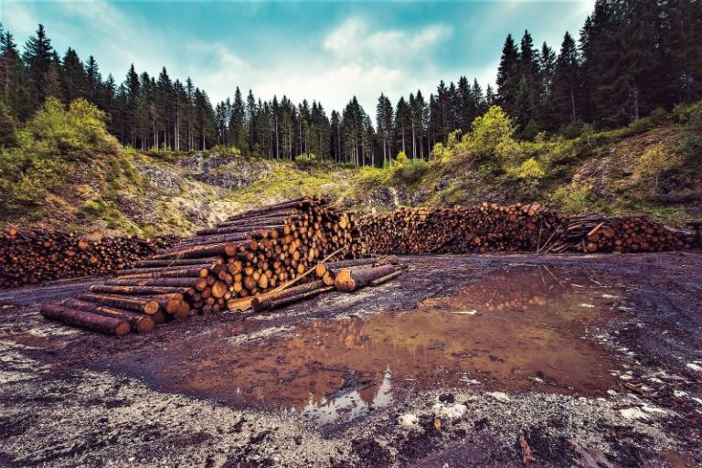

Bienvenidos a nuestro causa
El mundo sigue perdiendo sus bosques tropicales rápidamente, segun un informe que:
La encuesta anual del Instituto de Recursos Mundiales, una organización de investigación, reveló que el mundo perdió 4,1 millones de hectáreas de bosques primarios en 2022, un incremento del 10 por ciento en comparación con el año anterior. Esta es la primera evaluación que abarca un año completo desde noviembre de 2021, cuando en una reunión mundial sobre el cambio climático realizada en Glasgow, Escocia, 145 países prometieron frenar la pérdida de los bosques para fines de esta década.
